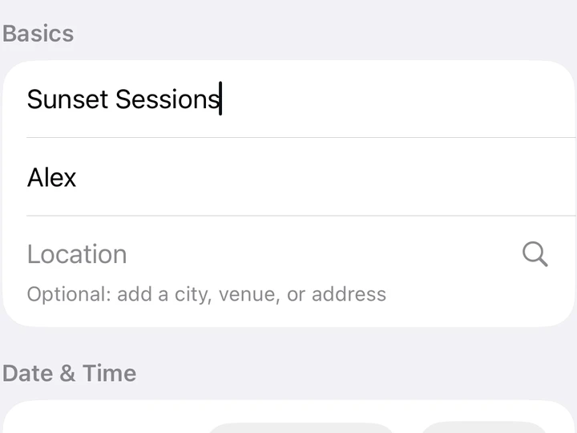
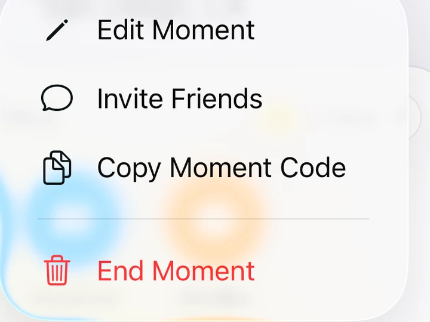
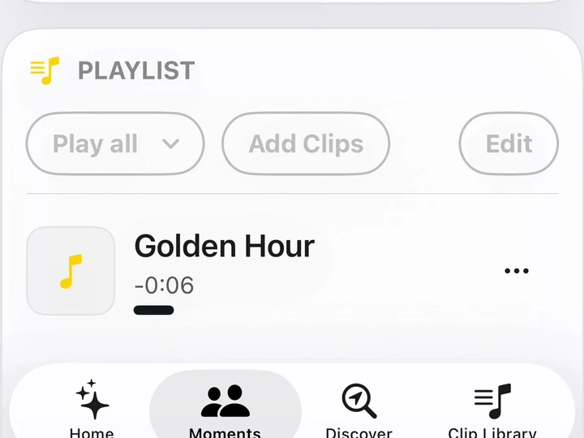

SUNSET SESSIONS
Your friends. Your soundtrack.
Gather somewhere good. Cue a sound that brings you together.
Bring your people together with sound. Create a Moment, invite your guests, and cue audio clips across their phones—in sync.

Available for iPhone and iPhone Duo.
Friends at sunset
SEE IT IN ACTION
Different places. Different sounds. The same simple way to bring everyone in.
1–3 of 6
SUNSET SESSIONS
Gather somewhere good. Cue a sound that brings you together.
OUR USUAL
Cue a familiar sound and share a little company, wherever you are.
DISCOVER
Find nearby recorded Moments. Listen at your own pace.
BALL GAME
Bring your fellow fans into the Moment. Cue it when it counts.
D&D
A little atmosphere. A perfectly timed arrival. Let sound tell part of the story.
FRIENDSGIVING
Share the laughter with friends who couldn’t make it.
Watch with sound on. Shared Moments play in sync; Discover lets you listen at your own pace.
THREE SIMPLE STEPS
01
Name your Moment and add the sounds you want to share.

02
Share the Moment code so your guests can join.

03
Choose a clip and cue synchronized playback for ready devices.

BEFORE YOU CUE
For the best synchronized playback, use a stable Wi‑Fi or cellular connection and keep Stelli open. Clips can also play in sync while Stelli is in the background or your device is locked, provided you remain joined to the Moment, the clip finishes preloading, and your device receives the playback cue in time. Network conditions and device background restrictions can prevent playback. If a device isn’t ready before the scheduled start, Stelli skips the clip on that device rather than playing it late.
Stelli preloads upcoming clips using your internet connection. Data use depends on clip size and whether a download is needed; cellular charges may apply.
Read the playback guide →YOUR CLIP LIBRARY
Record a cheer, an introduction, a little atmosphere, or something only your friends will understand. Save it in your Clip Library and add it to a Moment when you’re ready.
Already have a clip? You can import audio too. Arrange your playlist, choose the next clip, and lead the experience from your phone.
Guests listen on their own phones, aloud together or with headphones.
DISCOVER
Hosts can make a curated audio Moment available at a chosen location. Signed-in Stelli listeners within its location area can explore the clips at their own pace.
Following the Host isn’t required to discover or listen. It’s another way to experience the sounds and perspectives connected to a place.